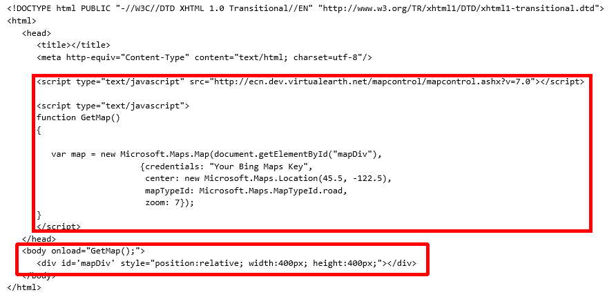

This API documentation can be found here. It seems good at first. Look more closely and pretty quickly we see all of the examples are meant for web pages. And for putting a Bing Map into a webpage they were very nicely. Below is an example of the code working in this web page with some basic controls.
No where does this documentatin say you need to host this in an iframe when you have it in the phone app. Which is really the key to this whole thing.
I copied and pasted part of code from the link above. To see where I copied from go to the bottom of the page.
The script at the top of the page is to the map control library. Beyond this to replicate what is in this example here you insert your Bing map key into the place where there are quotes. And then find the geolocation points of your favorite place and in this case set the zoom to 16 to zoom in fairly close.
And I changed the size in the div tag to width=100%
On the next page we are going to show what happens when you take this code and insert it directly into the Windows Phone Enviornment